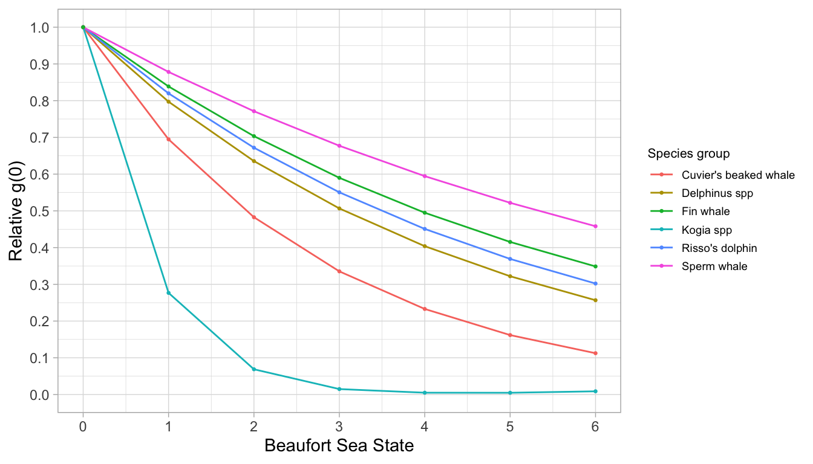
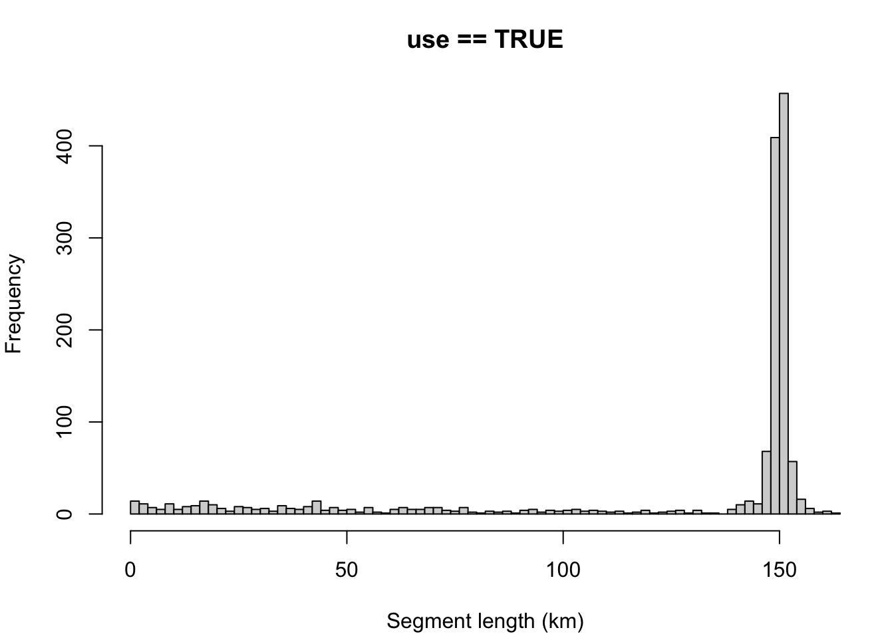
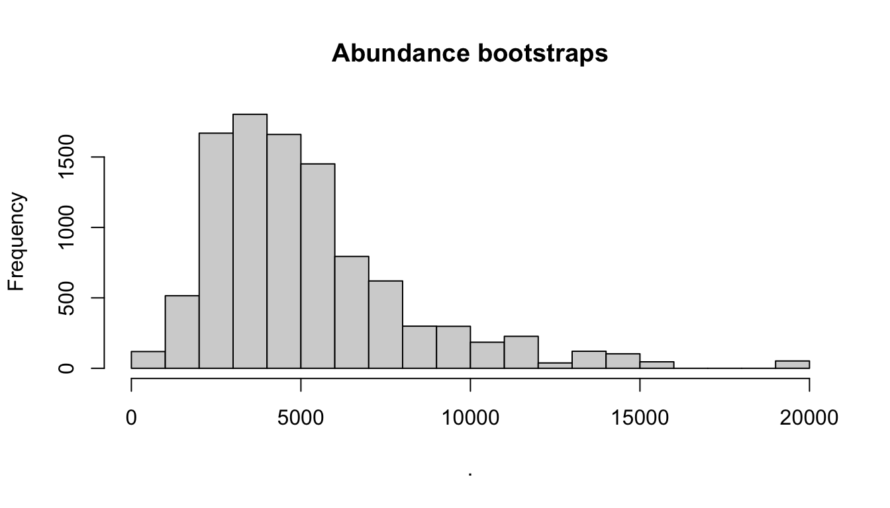

8 Line-transect analysis
We use line-transect analysis to produce estimates of animal density and/or abundance based upon surveys. The main LTabundR function for conducting line-transect analysis is lta(), which calls for four primary arguments in addition to your cruz object:
Below we explain each of these inputs, discuss other optional inputs, and explore the results produced by lta().
Key inputs
cruz
This is the cruz object you have generated with process_surveys(). Before running lta(), ensure that this cruz object is filtered only to the years, regions, and sighting conditions you would like to use for detection function fitting. Filter your cruz object with full flexibility using LTabundR::filter_cruz(). Note that filtering for detection function fitting is typically less stringent than filtering for downstream steps for abundance estimation, since as many sightings are included as possible to combat low sample sizes, as long as sightings were observed using standard methods in an unbiased search pattern, and as long as you do not expect detectability to vary across years and regions.
Here we will work with a version of the 1986-2020 Central North Pacific survey data we processed a few pages back. This version is included as a built-in dataset within LTabundR:
As it is provided, this dataset does not need any filtering.
We will use these data to estimate the abundance of striped dolphins (Stenella coeruleoalba), Fraser’s dolphins (Lagenodelphis hosei), and Melon-headed whales (Preponocephala electra) within the WHICEAS study area in 2017 and 2020. We will group these three species into a ‘species pool’ in order to gain a sufficient sample size for fitting a detection function. We will then use “Species” as a covariate within the detection function model, along with other variables including Beaufort Sea State, ship name, and log-transformed school size.
Rg0
The result of LTabundR::g0_model(), which is a data.frame with Relative trackline detection probabilities, Rg(0), for each species in each Beaufort sea state. See LTabundR dataset data("g0_results"), used below, as an example.
This is an optional input. If not provided, g(0) will be assumed to 1.0, and its CV will be assumed to be 0. Alternatively, you can manually specify values for g(0) and its CV in the estimates argument below.
Here we will use a data.frame of Rg(0) estimates based on the same survey years, 1986 - 2020, which has been provided as a built-in dataset:
fit_filters
The fit_filters input specifies how to filter the data before fitting the detection function. It accepts a named list, which in our example will look like this:
fit_filters = list(spp = c('013', '026', '031'),
pool = 'Multi-species pool 1',
cohort = 'all',
truncation_distance = 5,
other_species = 'remove')spp: A character vector of species codes. Using multiple species codes may be useful when you have low sample sizes for a cohort of similar species.cohort: The cohort containing these species, provided as a name or a number indicating which slot incruz$cohortsshould be referenced.truncation_distance: The truncation distance to apply during model fitting.
The remaining inputs are optional (i.e., they all have defaults):
pool: A character string, providing a title for this species pool. If not specified, the species codes used will be concatenated to produce a title automatically.other_species: A character vector with four recognized values:- If
"apply"(the default if not specified), the species code will be changed to"Other"for sightings in which the species was in a mixed-species school but was not the species with the largest percentage of the total school size. In those cases, the species was not as relevant to the detection of the school as the other species were, which may bias the detection function. This creates a factor level for the detection function to use (when"species"is a covariate) to distinguish between cue-relevant species that are within the specified pool and those that are not. - The second option for
other_speciesis"ignore", which does not reassign species codes to"Other", and ignores whether the species of interest held the plurality for a mixed species detection. - The third option is
"remove": any species re-assigned to"Other"will be removed before the detection function is fit; this can be useful if only a small number of species are re-assigned to"Other", which would then obviatespeciesas a viable covariate (since the sample size of allspecieslevels would be unlikely to exceeddf_settings$covariates_n_per_level– see below). - The fourth and final option is
coerce, which forces all species codes to"Other"for the purposes of detection function fitting and abundance estimation. This is effectively the same as removing ‘species’ from the list of covariates, but this option can be a convenience if you want to quickly toggle the use ofspeciesas a covariate for a specific species pool, and/or produce abundance estimates for unidentified taxa (e.g., an ‘Unidentified dolphins’ species pool that includes multiple species codes).
- If
df_settings
The df_settings input specifies how to fit a detection function to the filtered data. It accepts a named list, which in our example will look like this:
df_settings = list(covariates = c('bft','lnsstot','cruise','year','ship','species'),
covariates_factor = c(FALSE, FALSE, TRUE, TRUE, TRUE, TRUE),
covariates_levels = 2,
covariates_n_per_level = 10,
detection_function_base = 'hn',
base_model = '~1',
delta_aic = 2)(Note that all of these inputs have defaults, and are therefore optional.)
covariatesCovariates you wish to include as candidates in detection function models, provided as a character vector. The covariates must match columns existing withincruz$cohorts$<cohort_name>$sightings. Note that the function will ignore case, coercing all covariates to lowercase. Default: no covariates.covariates_factorA Boolean vector, which must be the same length ascovariates, indicating whether each covariate should be treated as a factor instead of a numeric. Default:NULL.covariates_levelsThe minimum number of levels a factor covariate must have in order to be included as an eligible covariate. Default:2.covariates_n_per_levelThe minimum number of observations within each level of a factor covariate. If this condition is not met, the covariate is excluded from the candidates. Default:10.detection_function_baseThe base key for the detection function, provided as a character vector. Accepted values are"hn"(half-normal key, the default, which exhibits greater stability when fitting to cetacean survey data; Gerrogette and Forcada 2005),"hr"(hazard-rate), orc("hn", "hr), which will loop through both keys and attempt model fitting.base_modelThe initial model formula, upon which to build using candidate covariates. If not provided by the user, the default is"~ 1".delta_aicThe AIC difference between the model yielding the lowest AIC and other candidate models, used to define the best-fitting models. Typically, AIC differences of less than 2 (the default) indicate effectively equal model performance. If this value is not zero, then model averaging will be done: if multiple models are withindelta_aicof the model with the lowest AIC, all “best” models will be used in subsequent steps and their results will be averaged. SeeDetailsbelow.
estimates
The estimates input specifies which estimates of density and abundance to produce based on the fitted detection function. This input accepts a list of sub-lists, which in our example will look something like this:
This example shows only a single sub-list, specifying how to generate a density/abundance estimate for striped dolphins (species code 013) within the “WHICEAS” geostratum for 2017.
spp: A character vector of species codes.title: A title for this abundance estimate, given as a character vector, ’ e.g.,"Striped dolphin - pelagic". If left blank, the species code(s) will be concatenated to use as a title.years: A numeric vector of years, used to filter data to include only effort/sightings from these years.regions: A character vector of geostratum names, used to filter the data. Any segment or sighting occurring within any (but not necessarily all) of the providedregionswill be returned. This holds true for nested regions: for example, in analyses from the Central North Pacific, in which the Hawaii EEZ geostratum ("HI-EEZ") is nested within the larger geostratum representing the entire CNP study area ("OtherCNP"), an input ofregions = "OtherCNP"will return segments/sightings both inside the Hawaii EEZ and outside of it.
You also have the option of manually specifying other filters & arguments. Each of these sub-lists accepts the following named slots:
cruises: An optional numeric vector of cruise numbers, used to filter data to include effort/sighting from only certain cruises. Ignored ifNULL.regions_remove: A character vector of geostratum names, similar to above. Any segment or sighting occurring within any of thesenot_regionswill not be returned. Using the example above, ifregions = "OtherCNP"andnot_regions = "HI-EEZ", only segments occuring withinOtherCNPand outside ofHI-EEZwill be returned. This can be particularly useful for abundance estimates for pelagic stock that exclude nested insular stocks.g0: If left as the defaultNULL, thelta()function will automatically estimate the weighted trackline detection probability (g0) according to the distribution of Beaufort sea states contained within the survey years/regions for which density/abundance is being estimated (this is done using theLTabundRfunctiong0_weighted()). This will only be done if theRg0input above is notNULL; if it is and you do not provide g(0) values here,g0will be coerced to equal 1. To coerceg(0)to a certain value of your own choosing, you can provide a numeric vector of length 1 or 2. If length 1, this value represents g(0) for all schools regardless of size. If length 2, these values represent g(0) for small and large school sizes, as defined byg0_thresholdbelow.g0_cv: Similar to g0 above: if leftNULL, the CV of theg(0)estimate will be automatically estimated based on weighted survey conditions. Alternatively, you can manually specify a CV here, using a numeric vector of length 1 or 2. If you do not specify a value andRg0input is NULL,g0_cvwill be coerced to equal 0.g0_threshold: The school size threshold between small and large groups.alt_g0_spp: An alternate species code to use to draw Relative g(0) values from theRg0input. This is useful in the event that Rg(0) was not estimated for the species whose density/abundance you are estimating, but there is a similarly detectable species whose Rg(0) parameters have been estimated.combine_g0: A Boolean, with defaultFALSE. IfTRUE, weighted g0 estimates will be produced separately for each species code provided (specifically, for each unique row in theRg0table that is found after filtering by the species codes you provide in this estimate), THEN average those estimates together. This can be useful when you do not have a Rg(0) estimates for a certain species, but you can approximate g0 by averaging together estimates from multiple species (e.g., averaging together weighted g(0) from across rorqual species in order to get a weighted g(0) estimate for ‘Unidentified rorquals’).region_title: An optional character vector indicating the title you would like to give to the region pertaining to this estimate. This can be useful if you have a complicated assemblage of regions you are combining and/or removing. If not supplied, the function will automatically generate aregion_titlebased onregionsandregions_remove.forced_effort: If this is a single numeric value instead ofNULL(NULLis the default), this value will be used as the survey effort, in km, in a brute-force method; this same value will be used for every year and region. This is only helpful if you are looking for a relatively easy way to compare results from your own analysis to another (e.g., comparingLTabundRresults to reports from NOAA reports prior to 2021, in which effort was calculated slightly differently).area: If this is a single numeric value instead ofNULL(NULLis the default), this value will be used as the area of the region in which abundance is being estimated, in square km, in a brute-force approach. If leftNULL, the function will calculate the final area of the survey area resulting from the regions and regions_remove filters above.remove_land: A Boolean, with defaultTRUE, indicating whether or not land area should be removed from the survey area before calculating its area for abundance estimation. This term is only referenced if area is not specified manually.
Here is the full estimates list for all the species-year-geostratum combinations for which we want to estimate density/abundance:
estimates <- list(
list(spp = '013',
title = 'Striped dolphin',
years = 2017,
regions = 'WHICEAS'),
list(spp = '013',
title = 'Striped dolphin',
years = 2020,
regions = 'WHICEAS'),
list(spp = '026',
title = 'Frasers dolphin',
years = 2017,
regions = 'WHICEAS'),
list(spp = '026',
title = 'Frasers dolphin',
years = 2020,
regions = 'WHICEAS'),
list(spp = '031',
title = 'Melon-headed whale',
years = 2017,
regions = 'WHICEAS'),
list(spp = '031',
title = 'Melon-headed whale',
years = 2020,
regions = 'WHICEAS'))Each of these sub-lists specifies the details for a single estimate of density/abundance, making it possible to produce multiple estimates from the same detection function model. Generally, there needs to be a sub-list for each species-region-year combination of interest.
You can imagine that building up these sub-lists can get tedious. It can also introduce the possibility of error or inconsistencies across estimates of multiple species. To address that issue, LTabundR includes the function lta_estimates(), which makes your code for preparing an estimates object much more efficient. That function is demonstrated in the Case Studies chapters.
Quickly review results:
results$estimate
## title species Region Area year segments km
## 1 Striped dolphin 013 (WHICEAS) 402948.7 2017 29 3040.009
## 2 Striped dolphin 013 (WHICEAS) 402948.7 2020 34 4585.386
## 3 Frasers dolphin 026 (WHICEAS) 402948.7 2017 29 3040.009
## 4 Frasers dolphin 026 (WHICEAS) 402948.7 2020 34 4585.386
## 5 Melon-headed whale 031 (WHICEAS) 402948.7 2017 29 3040.009
## 6 Melon-headed whale 031 (WHICEAS) 402948.7 2020 34 4585.386
## Area_covered ESW_mean n g0_est ER_clusters D_clusters N_clusters size_mean
## 1 11003.442 3.619543 3 0.510 0.0009868393 0.0002691926 108.47080 31.95079
## 2 16960.781 3.698878 3 0.483 0.0006542525 0.0001844374 74.31882 53.95865
## 3 NA NA 0 0.443 0.0000000000 0.0000000000 0.00000 NA
## 4 16897.976 3.685181 2 0.413 0.0004361683 0.0001437420 57.92064 132.51143
## 5 9538.118 3.137530 2 0.580 0.0006578929 0.0001819372 73.31137 185.98103
## 6 15957.100 3.479991 3 0.556 0.0006542525 0.0001706628 68.76837 226.13289
## size_sd ER D N
## 1 0.5780968 0.03153029 0.008611828 3470.125
## 2 2.7402089 0.03530258 0.009945862 4007.673
## 3 NA 0.00000000 0.000000000 0.000
## 4 182.1747087 0.05779729 0.018008943 7256.681
## 5 96.4369707 0.12235559 0.032840131 13232.889
## 6 175.5620746 0.14794801 0.040204435 16200.326More details on the lta() output are provided below.
Variance estimation
By default, the lta() function produces a single estimate of the detection function and a single estimate of density/abundance estimate for each sub-list within estimates(). However, you can obtain the coefficient of variation (CV) of those estimates by activating the function’s bootstrap variance estimation feature. To do this, add bootstraps as an input specifying a large number of iterations (1,000 iterations is standard, but we suggest first testing your code with 5 - 10 bootstraps before committing; the function typically requires ~1 hour per 100 bootstraps.).
For the purposes of example only, we will just use 10 bootstrap iterations here:
This command will first produce official estimates of the detection function and density/abundance, then it will repeat the analysis for the number of iterations you have specified. In each iteration, survey segments are re-sampled according to standard bootstrap variance estimation methods (see more details below, in “Behind the Scenes”).
Other inputs
There are a few other optional input arguments that lend further control over the lta() procedure.
lta(cruz,
Rg0,
fit_filters,
df_settings,
estimates,
use_g0 = TRUE,
ss_correction = 1,
bootstraps = 10
toplot = TRUE,
verbose = TRUE,)use_g0: A Boolean, with defaultTRUE, indicating whether or not to use customg(0)value(s). IfFALSE, the assumedg(0)value will be 1. This is an easy way to toggle on-and-off automated g(0) estimation and/or ignore manually supplied g(0) values.ss_correction: Should a correction be applied to school sizes? School sizes will be scaled by this number. The default,1, means no changes will occur.toplot: A Boolean, with defaultTRUE, indicating whether detection function plots (Distance::plot.ds()) should be displayed as the candidate models are tested.verbose: A Boolean, with defaultTRUE, indicating whether or not updates should be printed to the Console.
Output
During processing
While lta() is running, it will print things to the Console (if verbose is TRUE), plot diagnostic plots of how the study area is being calculated (if toplot is TRUE), and plot detection function model candidates (if toplot is TRUE). To demonstrate this, we will run the estimate for striped dolphins in 2017 only, without variance bootstrapping. To expedite processing, we will manually supply g(0) values from Bradford et al. (2021) (this saves about 3 minutes per estimate):
new_estimates <- list(
list(spp = '013',
title = 'Striped dolphin',
years = 2017,
regions = 'WHICEAS',
g0 = 0.35, g0_cv = 0.19))
# Run it:
demo <- lta(cruz, Rg0, fit_filters, df_settings, new_estimates)
##
## Reviewing `estimates` sublists and filling in any unspecified parameters ...
## --- estimate sub-list 1 :: Striped dolphin
## --- --- building survey area polygon given `regions` and `regions_remove` specs ...
## --- --- --- getting area of this polygon to use as abundance estimation area ...
## --- --- handling g(0) parameters ....
##
## Preparing a table of g(0) parameters for this set of estimates ...
## --- g(0) estimate: par1 = -0.63414 | par2 = 0.29679 | mean = 0.34878 | CV = 0.19058
##
## Filtering data according to `fit_filter` ...
## --- --- Segments: 1888
## --- --- Sightings: 407
##
## Handling "Other" species designations ...
##
## Removing rows with invalid numeric covariate data from the detection-function-fitting dataset: ***
## Cruise DateTime SightNoDaily line_num species Bft lnsstot
## 41 1164 1988-08-08 08:05:00 19880808_9 41585 026 NA 6.856462
## 72 1268 1989-08-23 17:45:00 19890823_12 60352 013 NA 2.995732
## 82 1268 1989-11-25 06:10:00 19891125_22 66719 013 NA 4.716132
## 387 2001 2020-01-26 07:51:40 20200126_129 609065 013 NA 3.676782
##
## Removing rows with invalid school size estimates from the detection-function-fitting dataset: ***
## Cruise DateTime SightNoDaily line_num species best ss_valid
## 334 1604 2016-07-07 07:15:57 20160707_105 512744 Other 1 FALSE
##
## Preparing sample size table ...
##
## Inventorying covariate factors ...
## --- covariates that will be used in detection function fitting:
## bft, lnsstot, ship, species
##
## ___________________________________________
## Estimating the detection function ...
## Step-wise model fitting of detection function...
##
## Key: hn :: Fitting base model ...
## AIC = 1066.289 | Pmean = 0.576
## Key: hn :: Step 1 :: Covariate 1 :: Formula :: ~1 + bft
## AIC = 1062.958 | Pmean = 0.572
## Key: hn :: Step 1 :: Covariate 2 :: Formula :: ~1 + lnsstot## AIC = 1064.352 | Pmean = 0.573
## Key: hn :: Step 1 :: Covariate 3 :: Formula :: ~1 + ship## AIC = 1054.178 | Pmean = 0.558
## Key: hn :: Step 1 :: Covariate 4 :: Formula :: ~1 + species## AIC = 1069.403 | Pmean = 0.575
## Key: hn :: Step 2 :: Covariate 1 :: Formula :: ~1 + ship + bft## AIC = 1044.227 | Pmean = 0.547
## Key: hn :: Step 2 :: Covariate 2 :: Formula :: ~1 + ship + lnsstot## AIC = 1050.053 | Pmean = 0.552
## Key: hn :: Step 2 :: Covariate 4 :: Formula :: ~1 + ship + species
## AIC = 1057.603 | Pmean = 0.557
## Key: hn :: Step 3 :: Covariate 2 :: Formula :: ~1 + ship + bft + lnsstot## AIC = 1042.481 | Pmean = 0.543
## Key: hn :: Step 3 :: Covariate 4 :: Formula :: ~1 + ship + bft + species
## AIC = 1044.467 | Pmean = 0.543
## Key: hn :: Step 4 :: Covariate 4 :: Formula :: ~1 + ship + bft + lnsstot + species## AIC = 1041.309 | Pmean = 0.536
##
## Preparing model comparison tables...
## Averaging each sighting ESW across top-candidate detection functions ...
##
## ___________________________________________
## Estimating density & abundance ...
## --- --- Filtering data according to `estimates` input ...
## --- --- Segments: 29
## --- --- Sightings: 3
## --- --- Staging g0 values ...
## --- --- Calcluating density and abundance for various region-year combinations ...
## Additionally, windows will appear showing details for the detection function models and details of the density/abundance estimate.
Outputs
The lta() function returns a list of objects. To demonstrate this output, we will pull back in the dataset representing the result of the analysis above, for all three species in both years (with 5 bootstrap iterations):
This list of results has five slots:
pool: The species pool pertaining to these estimates.inputs: A list of the inputs used to produce these estimates.estimate: A table of density/abundance estimates for each species/region/year combination specified in theestimatesinput.
results$estimate
## title species Region Area year segments km
## 1 Striped dolphin 013 (WHICEAS) 402948.7 2017 29 3040.009
## 2 Striped dolphin 013 (WHICEAS) 402948.7 2020 34 4585.386
## 3 Frasers dolphin 026 (WHICEAS) 402948.7 2017 29 3040.009
## 4 Frasers dolphin 026 (WHICEAS) 402948.7 2020 34 4585.386
## 5 Melon-headed whale 031 (WHICEAS) 402948.7 2017 29 3040.009
## 6 Melon-headed whale 031 (WHICEAS) 402948.7 2020 34 4585.386
## Area_covered ESW_mean n g0_est ER_clusters D_clusters N_clusters size_mean
## 1 11003.442 3.619543 3 0.512 0.0009868393 0.0002681410 108.04709 31.95079
## 2 16960.781 3.698878 3 0.485 0.0006542525 0.0001836769 74.01235 53.95865
## 3 NA NA 0 0.446 0.0000000000 0.0000000000 0.00000 NA
## 4 16897.976 3.685181 2 0.410 0.0004361683 0.0001447937 58.34445 132.51143
## 5 9538.118 3.137530 2 0.583 0.0006578929 0.0001810010 72.93413 185.98103
## 6 15957.100 3.479991 3 0.557 0.0006542525 0.0001703564 68.64490 226.13289
## size_sd ER D N
## 1 0.5780968 0.03153029 0.008578188 3456.570
## 2 2.7402089 0.03530258 0.009904849 3991.146
## 3 NA 0.00000000 0.000000000 0.000
## 4 182.1747087 0.05779729 0.018140716 7309.778
## 5 96.4369707 0.12235559 0.032671143 13164.796
## 6 175.5620746 0.14794801 0.040132254 16171.241df: A named list with details for the detection function.
results$df %>% names
## [1] "best_models" "all_models" "best_objects" "sightings" "sample_size"
## [6] "curve"
results$df$best_models
## Model Key_function Formula Pmean AIC
## 1 11 hn ~1 + ship + bft + lnsstot + species 0.5357372 1041.309
## 2 9 hn ~1 + ship + bft + lnsstot 0.5431524 1042.481
## $\\Delta$AIC Covariates tested pool
## 1 0.000 bft, lnsstot, ship, species Multi-species pool 1
## 2 1.172 bft, lnsstot, ship, species Multi-species pool 1bootstrap: If bootstrap variance estimation was carried out, the output would also includebootstrap, a named list with results from the bootstrap process, only returned if the bootstraps input is greater than 1.
results$bootstrap$summary %>% head
## # A tibble: 6 × 18
## # Groups: title, Region [3]
## title Region year species iterations ESW_mean g0_mean g0_cv km ER
## <chr> <chr> <chr> <chr> <int> <dbl> <dbl> <dbl> <dbl> <dbl>
## 1 Frasers d… (WHIC… 2017 026 10 NaN 0.454 0.777 3030. 0
## 2 Frasers d… (WHIC… 2020 026 10 3.44 0.482 0.763 4427. 0.0615
## 3 Melon-hea… (WHIC… 2017 031 10 3.02 0.628 0.409 3030. 0.144
## 4 Melon-hea… (WHIC… 2020 031 10 3.26 0.633 0.417 4427. 0.205
## 5 Striped d… (WHIC… 2017 013 10 3.49 0.479 0.144 3030. 0.0406
## 6 Striped d… (WHIC… 2020 013 10 3.37 0.499 0.184 4427. 0.0502
## # … with 8 more variables: D <dbl>, size <dbl>, Nmean <dbl>, Nmedian <dbl>,
## # Nsd <dbl>, CV <dbl>, L95 <dbl>, U95 <dbl>Unusual estimate scenarios
Most line-transect estimates in most areas are relatively straightforward: you want an estimate for a single species in a single year, and your geostrata do not overlap, nor do they need to be stratified or combined in funny ways.
But there will also be unusual and slightly more complicated scenarios. We outline some of those below and demonstrate how they can be handled within the LTabundR framework.
Species combinations & g(0)
Multi-species schools
Multi-species schools can confound detection function model fitting, since your species of interest may not be the predominant species in the group, which means that the other species present may be having a greater influence over the detection function. You can decide how to account for this using the other_species slot in your fit_filters list. See the details on this discussed above.
Species pools
When you don’t have enough sightings of individual species to model a detection function effectively, it can be useful to pool sightings from multiple species who have similar detection characteristics. This is a common tactic in the Central North Pacific.
When you do this, you typically need to make the following changes to a “normal” lta() call:
In your
df_settingslist, consider addingspeciesas a covariate, and ensure that you specify that it should be treated as a factor. This may improve detection function model fit.In your
fit_filterslist, specify multiple species codes and name your species pool accordingly (e.g., “Multi-species pool 1”).In your
fit_filterslist, specify how to handle “Other” species (see above).In your
estimateslist, add a sub-list for each species-region-year for which you want a density/abundance estimate.
We took all of these steps in the example above with striped dolphins, Fraser’s dolphins, and melon-headed whales. Use that code as a guide.
Pooling similar species
Species that can be confused with one another may need to be pooled together for abundance estimation. For example, in the northeast Pacific, sei whales, Bryde’s whales, and fin whales can co-occur but they are difficult to distinguish in the field. They are also relatively uncommon, and may need to be pooled with other species in order to obtain a sound detection function model. To account for this, we want to estimate the density/abundance in the WHICEAS study area of all detections of sei, Bryde’s, fin whales together.
To handle this, we will follow all the steps taken for a multi-species pool, as discussed above. Additionally, in our estimates sub-list(s), we will specify (1) that multiple species should be included in the estimate, and (2) that the weighted g(0) estimates for each of the individual species should be averaged together:
Rare unidentified taxa
A similar problem occur when you have species codes for unidentified taxa that have been identified down to a family- or genus-level. For example, “Unidenfitied Mesoplodon” is a species code (the code is "050") for any beaked whale that is definitely in the genus Mesoplodon. There are plenty of these sightings, which means g(0) and its CV can be estimated just fine without referring to other species codes.
Other unidentified taxa, however, are less common. For example, in Hawaiian studies, density/abundance is estimated for “Unidentified rorquals”. In the field there is a species code for this group, "070", but it is rarely used – there are enough sightings to model the detection function, but not nearly enough sightings to estimate g(0) or its CV. In this case, we need to combine g(0) from more common species codes in order to estimate the unidentified rorqual’s g(0).
To do this, we fit a detection function using species code "070" …
fit_filters <-
list(spp = c('070'),
pool = 'Unidentified rorqual',
cohort = 'all',
truncation_distance = 5.5)… then, in our estimates list, we specify some alternate g(0) species designations.
Geostratum combinations
In your estimates sub-lists, the regions and regions_remove slots give you control of the geographic scope of (1) the weighted g(0) and CV used in density estimation, (2) the effort and sightings used to estimate density, (3) and the area used to calculate abundance.
A note on cohort geostrata
Recall that, when processing your survey data to create a cruz object, you provide a list of geostrata as an argument in your process_surveys() call. You also have the option to specify a subset of those geostrata for each species cohort (see load_cohort_settings()), which is an option that you should almost always use. Selecting a subset of geostrata is important because that subset is used to “segmentize” your survey data – i.e., break effort into discrete sections that can be bootstrap-sampling during the lta() variance estimation routine – and the segmentizing procedure always breaks segments when a survey passes from one geostratum to another.
This matters because the lta() bootstrapping routine will re-sample survey segments in a way that preserves the proportion of segments occurring in each geostratum, to ensure that all geostrata are represented in the same proportion as the original estimate. When segments are unncessarily broken into small segments by irrelevant geostrata that have been included in the analysis, the bootstrap estimate of the CV is likely to be too large.
For example: in the Central North Pacific, there are about 11 geostrata commonly used. These include the Hawaiian EEZ geostratum, the Main Hawaiian Islands geostratum, and the larger CNP geostratum that represents the maximum range of the study area. These three geostrata are typically all you need for most density estimates for most species. However, a few species – e.g., bottlenose dolphin, pantropical spotted dolphin, and false killer whale – have special geostrata that represent insular stock boundaries and/or pelagic stock boundaries. If those insular geostrata are used in density estimates for which they do not apply, they will confound the bootstrap estimate of density/abundance CV. Punchline: be sure to specify only the relevant geostrata in each cohort’s settings.
Combining disparate geostrata
For example, in Hawaii bottlenose dolphins belong to a pelagic stock as well as several insular stocks. If you wished to estimate the abundance of all insular stocks together, you simply provide their respective geostratum names in the regions slot of your estimates sub-list:
Removing insular geostrata
Conversely, you may wish to estimate density/abundance for pelagic bottlenose dolphins only, ignoring the insular stocks. You can substract geostrata using the regions_remove slot:
Combine partially overlapping geostrata
Say you want to estimate the density/abundance for a set of geostrata that partially overlap. An example of this is that the Northwest Hawaiian Islands geostratum overlaps slightly with the Main Hawaiian Islands geostratum. This is not an issue; when study area is calculated within lta() (actually, that function calls another function, strata_area(), to do this. That function is demonstrated below), overlap among strata is accounted for.
Regionally stratified analysis
Field surveys are sometimes stratified such that trackline design and/or density can differ substantially across regions. Also, analysts may sometimes wish to estimate density/abundance for individual regions separately, regardless of design stratification.
In lta(), you can accommodate a stratified analysis by providing an estimates sub-list for each geostratum. For example, in 2002 the Hawaiian EEZ was surveyed with different effort intensity in the Main Hawaiian Islands region compared to pelagic waters. For that reason, density/abundance estimates ought to be stratified by region:
estimates <- list(
list(spp = '013',
title = 'Striped dolphin',
years = 2002,
regions = 'MHI'),
list(spp = '013',
title = 'Striped dolphin',
years = 2002,
regions = 'HI_EEZ',
regions_remove = 'MHI'))Here we have one 2002 estimate for the Main Hawaiian Islands, and a second for the pelagic Hawiian EEZ, achieved by subtracting the "MHI" stratum from the "HI_EEZ" stratum.
Once lta() processing is complete, you can summarize and plot the results for each study area separately. The next step is to combine the stratified estimates to generate a grand estimate for the entire EEZ. This is achieved using the LTabundR functions lta_enlist() and lta_destratify(). We discuss this further in a later chapter.
Subgroup-based analyses
After 2010, Pacific Islands Fisheries Science Center (PIFSC) began a sub-group protocol referred to as the “PC Protocol” after the scientific name for false killer whales, Pseudorca crassidens, which was the species for which the protocol was designed.
False killer whales are rare and occur in dispersed subgroups, which complicates conventional distance sampling approaches to line-transect analysis.
To handle this, a separate, subgroup-based analytical approach was developed in 2014 - 2017. This approach could theoretically be used for other species that occur in subgroups. We cover this on a separate page.
Behind the scenes
Area estimation
Unless you manually specify the study area in your estimates list, lta() will calculate your study area for you based on the geostrata you provide. It does so by calling the LTabundR function strata_area(), which you can use on your own to explore geostratum combination options. This function was designed using the sf package to handle complex polygon combinations, and it uses Natural Earth datasets to remove land within your study area (this is a feature you can turn off, if you want).
Here are some examples of how strata_area() handles complex scenarios.
Say you want to estimate abundance in the ‘WHCEAS’ study area, but you want to make sure the study area estimate is accurately removing land:

Say you want to estimate abundance in the pelagic Hawaiian EEZ, ignoring effort and sightings within the Main Hawaiian Islands stratum and accurately removing small islands in northwest Hawaii:
demo <- strata_area(strata_all = cruz$settings$strata,
strata_keep = c('HI_EEZ'),
strata_remove = c('MHI'),
verbose = FALSE)
Say you want to estimate abundance of pelagic bottlenose dolphins within the WHICEAS study area, ignoring the insular stocks:
demo <- strata_area(strata_all = cruz$settings$strata,
strata_keep = c('WHICEAS'),
strata_remove = c('Bottlenose_KaNi','Bottlenose_OUFI','Bottlenose_BI'),
verbose = FALSE)
Say you want to estimate abundance for only the insular bottlenose stocks:
demo <- strata_area(strata_all = cruz$settings$strata,
strata_keep = c('Bottlenose_KaNi','Bottlenose_OUFI','Bottlenose_BI'),
verbose = FALSE)
Say you want to estimate abundance for false killer whales within the Northwest Hawaiian Islands and Main Hawaiian Islands study areas combined, but those geostrata partially overlap:
demo <- strata_area(strata_all = cruz$settings$strata,
strata_keep = c('MHI','NWHI'),
verbose = FALSE)
Say you want to estimate abundance for the Hawaiian EEZ outside of those partially overlapping geostrata:
demo <- strata_area(strata_all = cruz$settings$strata,
strata_keep = 'HI_EEZ',
strata_remove = c('MHI','NWHI'),
verbose = FALSE)
g(0) estimation
If you want lta() to calculate a weighted g(0) estimate (and associated CV) that is specific to the conditions associated with your estimates sub-list parameters, all you need to do is provide the Rg0 input. When you do this, the lta() function will find the Rg0 values associated with the species code(s) in your estimates sub-list, then calculate weighted g(0) and its CV using the LTabundR function, g0_weighted(), which we discussed and demonstrated on the previous page.
If lta() can’t find your species code in the Rg0 table you provide, it will give up and assume that g(0) is 1.0 and that g0_cv is 0.0.
If your estimates sub-list has a alt_g0_spp slot, lta() will use that species code instead to filter the Rg0 table.
If your estimates sub-list has a combine_g0 slot that is TRUE, lta() will filter the Rg0 table using all species codes you provide. If that filtration results in multiple Rg0 species being found, weighted g(0) will be calculated for each of those species separately, then those g(0) estimates will be combined using a geometric mean (using the LTabundR function g0_combine()). If combine_g0 is FALSE, only the first species code provided in your estimates sub-list will be used to filter Rg0.
If you want to supply a weighted g(0) estimate and its CV yourself, you can add the g0 and g0_cv slots to your estlimates sublist, as explained above.
If you want to coerce g(0) to be assumed to be 1.0 (with CV = 0.0), you can either (1) not supply the Rg0 input, or (2) manually specify the g0 and g0_cv slots in your estimates sub-list accordingly.
Covariates in detection function estimation
Before detection functions are modelled, any covariates supplied by the user and specified as a factor are first tested for eligibility. Only factors with at least two levels (or whatever you specified with df_settings$covariates_levels) and 10 observations in each level (or whatever you specified with df_settings$covariates_n_per_level) are eligible for inclusion.
Fitting a detection function
The detection function is estimated using functions in the package mrds, primarily the main function mrds::ddf(), which uses a Horvitz-Thompson-like estimator to predict the probability of detection for each sighting. If multiple base key functions (e.g., half-normal or hazard-rate) are provided, and/or if covariates are specified, model fitting is done in a forward stepwise procedure:
- In the first round, the base model (no covariates, i.e.,
"~1") is fit first.
- In the second round, each covariate is added one at a time; at the end of the round, the covariate, if any, that produces the lowest AIC below the AIC from the previous round is added to the formula.
- This process is repeated in subsequent rounds, adding a new covariate term in each round, until the AIC no longer improves.
- If a second base key is provided, the process is repeated for that second key.
All models within delta_aic of the model with the lowest AIC qualify as best-fitting models. The best-fitting model(s) is(are) then used to estimate the Effective Strip half-Width (ESW) based on the covariates associated with each sighting.
If multiple best-fitting models occur, we will find the average ESW for each sighting across all models, using a weighted mean approach in which we weight according to model AIC. To turn off this model averaging step, set delta_aic to 0 to avoid passing multiple models to the abundance estimation stage.
Note that if LnSsTot is included as a covariate, the function will (1) check to see if the sightings dataframe has a column named ss_valid (all cruz objects do), then, if so, (2) filter sightings only to rows where ss_valid is TRUE, meaning the school size estimate for that sighting is a valid estimate.
This stage of the lta() command is executed within a backend function, LTabundR::fit_df(), which has its own documentation for your reference.
Estimating density & abundance
Estimates are produced for various combinations of species, regions, and years, according to the arguments specified in your estimates list(s). Before these estimates are produced, we filter the data used to fit the detection function to strictly systematic (design-based) effort (i.e., EffType = "S"), in which standard protocols are in use (i.e., OnEffort = TRUE) and the Beaufort sea state is less than 7 (though these controls can be modified using the lta() inputs abund_eff_types and abund_bft_range (see above).
Note that if sightings has a column named ss_valid (all standard cruz objects do) and any of the rows in that column are FALSE, those rows will have their best school size estimate (which will be NA or 1, since they are invalid) replaced by the mean best estimate for their respective species.
This stage of the lta() command is executed within a back-end function, LTabundR::abundance(), which has its own documentation for your reference.
Bootstrap variance estimation
If the bootstraps input value is greater than 1, bootstrap variance estimation will be attempted. In each bootstrap iteration, survey segments are re-sampled with replacement before fitting the detection function and estimating density/abundance. Re-sampling is done in a routine that preserves the proportion of segments from each geostratum.
Note that the entire process is repeated in each bootstrap: step-wise fitting of the detection function, averaging of the best-fitting models, and density/abundance estimation for all species/region/year combinations specified in your estimates input. At the end of the bootstrap process, results are summarized for each species/region/year combination. 95% confidence intervals are calculated using the BCA method (package coxed, function bca()).
g(0) values during bootstrapping
When conducting the non-parametric bootstrap routine to estimate the CV of density and abundance, uncertainty is incorporated into the g(0) value in each iteration using a parametric bootstrapping subroutine: First, a logit-transformed distribution is modeled based upon the mean and CV of g(0) provided by the user in the estimates input (see documentation for LTabundR::g0_optimize() for details on this step). This modeled distribution is used to randomly draw a g(0) value for each iteration of the density/abundance bootstrap routine. In this way, the uncertainty in g(0) is propagated into uncertainty in density/abundance.